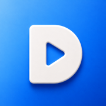

ND FileLocal-first photos, videos and file browser for your phone and your NAS.
On first launch, choose "Add Local Folder" to pick any folder in the Files app, or "Choose Photos or Videos" to pick items from your Photos library. Added items appear on Home and in Library.
From the Add Source screen, choose a network source and enter your server's protocol (SMB, WebDAV, SFTP, FTP, or NFS), address, and credentials. ND File only asks for local network permission when you tap "Search for Sources."
Make sure your phone and server are on the same network, and that the account you enter has read access to the share or folder.
Free accounts can add one source. Membership (monthly, annual, or a one-time lifetime purchase) unlocks additional sources, offline downloads, HEIC viewing, App Lock, and casting to AirPlay or Chromecast-compatible TVs.
Open Settings → Membership Plan → Restore Purchases. Membership status is verified directly with the App Store through StoreKit.
Check that the source is still reachable (network sources need the server online and on the same network) and that the file format is supported. For offline items, confirm the download finished in the Downloads screen.
Email us at the address above from the Apple ID account the app is installed under, and we'll help you regain access.
Go to Settings → Diagnostic Logs → Export Diagnostic Logs, then attach the exported file to your support email. Logs never leave your device unless you export them yourself.
See our Privacy Policy for details on what data ND File does (and does not) handle.
首次启动时，选择"添加本地文件夹"从「文件」App 中挑选任意文件夹，或选择"选择照片或视频"从相册中挑选内容。添加后的内容会显示在首页和媒体库。
在添加来源页面选择网络来源，填写协议（SMB、WebDAV、SFTP、FTP 或 NFS）、地址和账号信息。只有在你点击"搜索来源"时，应用才会请求本地网络权限。
请确认手机和服务器在同一网络下，且所填账号对该共享目录有读取权限。
免费账号可添加 1 个来源。会员（包月、包年或一次性永久购买）可解锁更多来源、离线下载、HEIC 查看、App 锁定，以及投屏到 AirPlay 或支持 Chromecast 的电视。
打开"设置 → 会员方案 → 恢复购买"。会员状态会通过 StoreKit 直接向 App Store 核实。
请确认来源仍可访问（网络来源需要服务器在线并处于同一网络），以及文件格式受支持。离线内容请在"下载"页面确认下载已完成。
请使用安装该应用的 Apple ID 对应邮箱，发邮件到上方地址，我们会协助你恢复访问。
进入"设置 → 诊断日志 → 导出诊断日志"，将导出的文件附加到支持邮件中。日志只有在你主动导出时才会离开设备。
数据处理方式详见隐私政策。
首次啟動時，選擇「加入本機資料夾」，從「檔案」App 中挑選任意資料夾，或選擇「選擇照片或影片」，從照片圖庫中挑選內容。加入後的內容會顯示在首頁和媒體庫。
在「加入來源」頁面選擇網路來源，輸入伺服器的協定（SMB、WebDAV、SFTP、FTP 或 NFS）、位址和登入資訊。只有在你點選「搜尋來源」時，ND File 才會要求區域網路存取權限。
請確認手機和伺服器位於同一個網路，且輸入的帳號對共享目錄或資料夾有讀取權限。
免費帳號可加入 1 個來源。會員（月付、年付或一次性永久購買）可解鎖更多來源、離線下載、HEIC 檢視、App 鎖定，以及投放到支援 AirPlay 或 Chromecast 的電視。
開啟「設定 → 會員方案 → 恢復購買」。會員狀態會透過 StoreKit 直接向 App Store 驗證。
請確認來源仍可存取（網路來源需要伺服器在線上且位於同一個網路），並確認檔案格式受支援。離線內容請在「下載」頁面確認下載已完成。
請使用安裝此 App 的 Apple ID 所對應的電子郵件帳號，寄信至上方地址，我們會協助你恢復存取。
前往「設定 → 診斷記錄 → 匯出診斷記錄」，並將匯出的檔案附加至支援郵件。只有在你主動匯出時，記錄才會離開裝置。
請參閱 隱私權政策，了解 ND File 處理及不處理哪些資料。
처음 실행할 때 "로컬 폴더 추가"를 선택해 파일 앱에서 폴더를 고르거나, "사진 또는 동영상 선택"을 선택해 사진 보관함에서 항목을 고르세요. 추가한 항목은 홈과 라이브러리에 표시됩니다.
소스 추가 화면에서 네트워크 소스를 선택하고 서버의 프로토콜(SMB, WebDAV, SFTP, FTP 또는 NFS), 주소, 로그인 정보를 입력하세요. ND File은 "소스 검색"을 탭할 때만 로컬 네트워크 접근 권한을 요청합니다.
휴대폰과 서버가 같은 네트워크에 연결되어 있고, 입력한 계정에 공유 위치나 폴더의 읽기 권한이 있는지 확인하세요.
무료 계정은 소스 하나를 추가할 수 있습니다. 멤버십(월간, 연간 또는 일회성 평생 구매)을 이용하면 추가 소스, 오프라인 다운로드, HEIC 보기, 앱 잠금, AirPlay 또는 Chromecast 호환 TV로 전송 기능을 사용할 수 있습니다.
설정 → 멤버십 요금제 → 구매 복원으로 이동하세요. 멤버십 상태는 StoreKit을 통해 App Store에서 직접 확인합니다.
소스에 계속 접근할 수 있는지, 파일 형식이 지원되는지 확인하세요. 네트워크 소스는 서버가 온라인 상태이며 같은 네트워크에 있어야 합니다. 오프라인 항목은 다운로드 화면에서 다운로드가 완료되었는지 확인하세요.
앱 설치에 사용한 Apple ID 계정의 이메일로 위 주소에 문의해 주세요. 다시 접근할 수 있도록 도와드리겠습니다.
설정 → 진단 로그 → 진단 로그 내보내기로 이동한 후, 내보낸 파일을 지원 문의 이메일에 첨부하세요. 직접 내보내지 않는 한 로그는 기기 밖으로 전송되지 않습니다.
ND File의 데이터 처리 방식에 대한 자세한 내용은 개인정보 처리방침을 확인하세요.
初回起動時に「ローカルフォルダを追加」を選び、「ファイル」アプリ内のフォルダを選択します。または「写真または動画を選択」から、写真ライブラリ内の項目を選びます。追加した項目はホームとライブラリに表示されます。
ソース追加画面でネットワークソースを選び、サーバーのプロトコル（SMB、WebDAV、SFTP、FTP、NFS）、アドレス、認証情報を入力します。ND File がローカルネットワークへのアクセス許可を求めるのは、「ソースを検索」をタップしたときだけです。
スマートフォンとサーバーが同じネットワークに接続されていること、入力したアカウントに共有先やフォルダの読み取り権限があることを確認してください。
無料アカウントではソースを 1 つ追加できます。メンバーシップ（月額、年額、または一度の購入で永続利用）では、ソースの追加、オフラインダウンロード、HEIC 表示、アプリロック、AirPlay または Chromecast 対応テレビへのキャストを利用できます。
「設定 → メンバーシッププラン → 購入を復元」を開いてください。メンバーシップの状態は、StoreKit を通じて App Store に直接確認されます。
ソースにアクセスできることと、ファイル形式が対応していることを確認してください。ネットワークソースでは、サーバーがオンラインで同じネットワーク上にある必要があります。オフラインの項目は、ダウンロード画面で完了していることを確認してください。
アプリのインストールに使用した Apple ID のメールアドレスから、上記の宛先にご連絡ください。アクセスの復旧をお手伝いします。
「設定 → 診断ログ → 診断ログを書き出す」に進み、書き出したファイルをサポートへのメールに添付してください。自分で書き出さない限り、ログがデバイスの外に送信されることはありません。
ND File が扱うデータや扱わないデータの詳細は、プライバシーポリシーをご確認ください。